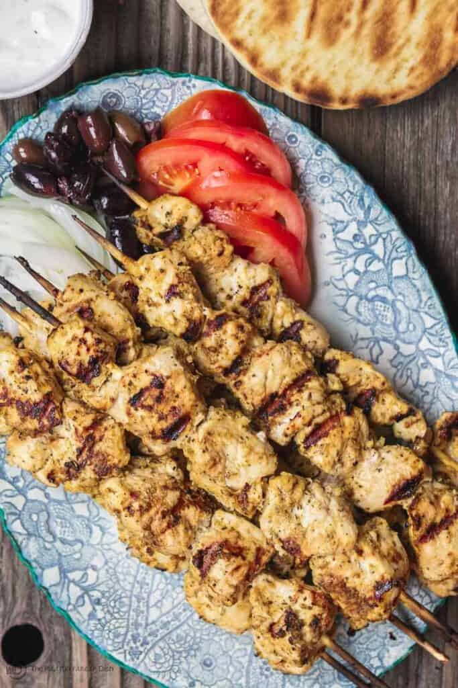

Chicken Souvlaki

Description
You simply cannot go to Greece without experiencing souvlaki. It's a major Greek street food, and happens to be one of my favorites.
Like Kabobs, the word Souvlaki simply means “meat on skewers.” But Greeks also use it to describe the actual meal—warm pita, loaded with perfectly marinated grilled meat and topped with Tzatziki sauce. Other fixings are typically included, and even a handful of fries are tucked into the pita.
Ingredients
Marinade
- 10 garlic cloves, peeled
- 2 tbsp dried oregano
- 1 tsp dried rosemary
- 1 tsp sweet paprika
- 1 tsp each Kosher salt and black pepper
- ¼ cup Private Reserve Greek extra virgin olive oil
- ¼ cup dry white wine
- Juice of 1 lemon
- 2 bay leaves
Chicken
- 2 ½ lb organic boneless skinless chicken breast, fat removed, cut into 1 ½ inch pieces
Pitta fixings
- Greek pita bread
- Tzatziki Sauce
- Sliced tomato, cucumber, onions, and Kalamata olives
Steps
- Prepare the marinade. In the bowl of a small food processor, add garlic, oregano, rosemary, paprika, salt, pepper, olive oil, white wine, and lemon juice (do NOT add the dried bay leaves yet). Pulse until well combined.
- Place chicken in a large bowl and add bay leaves. Top with marinade. Toss to combine, making sure chicken is well-coated with marinade. cover tightly and refrigerate for 2 hours or overnight (see note for quicker marinating option.)
- Soak 10 to 12 wooden skewers in water for 30 to 45 minutes or so. Prepare Tzatziki sauce and other fixings, and if you're adding Greek salad or other sides, prepare those as well. (some sides like roasted garlic hummus may take longer, you can prepare those in advance).
- When ready, thread marinated chicken pieces through the prepared skewers.
- Prepare outdoor grill (or griddle). Brush grates with a little oil and heat over medium-high heat. t. Place chicken skewers on grill (or cook in batches on griddle) until well browned and internal temperature registers 155° on instant read thermometer. Be sure to turn skewers evenly to cook on all sides, about 5 minutes total. (Adjust temperature of grill if necessary). While grilling, brush lightly with the marinade (then discard any left marinade).
- Transfer chicken to serving platter and let rest for 3 minutes. Meanwhile, briefly grill pitas and keep warm.
- Assemble grilled chicken souvlaki pitas. First, spread Tzatziki sauce on pita, add chicken pieces (take them off skewers first, of course) then add veggies and olives.